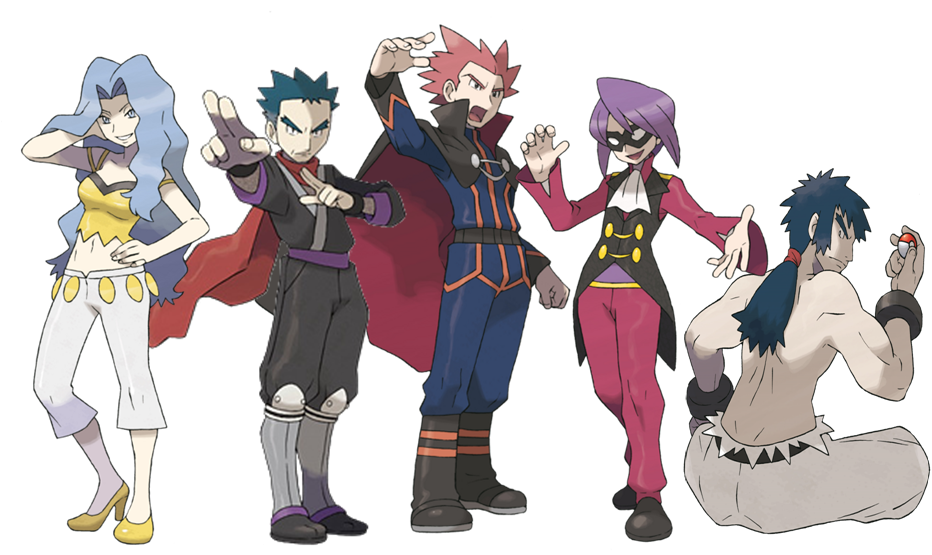

Liga Pokémon
La Liga Pokémon es el objetivo de miles de entrenadores alrededor de todo el mundo, cada región cuenta con su propia liga, para acceder a ella deben obtener un minímo de ocho medallas, así mismo cada región cuenta con un alto mando, un torneo organizado para los campeones de la liga pokémon y cuyo nivel es sumamente exigente.
